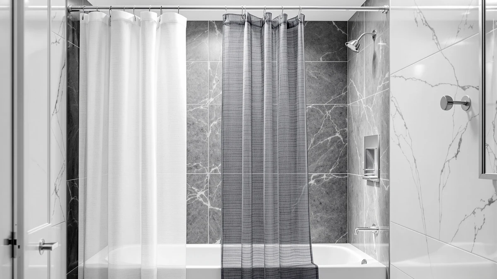

The Best Weighted Shower Curtain Liners (2026)
Prices and picks verified as of September 2026. Independent, reader-supported reviews.


Quick Answer
The best weighted shower curtain liners keep a panel flush against the tub instead of billowing into your shower, and the Eazzier Bath Extra Long Natural does that at 84 inches long for $13.99. We compared price, size, and material across seven liners and curtains to find picks that fit stall showers, tall walk-in tubs, and everyday budgets.
Our pick: Eazzier Bath Extra Long Natural, $13.99 Check Price on Amazon
Bottom line: our top pick is the Eazzier Bath Extra Long Natural Linen Textured Shower Curtain at $13.99. The best budget option is the AmazerBath Stall Shower Curtain Liner 36x72 Walk In Clear at $8.98.
Things to Know Before You Buy
- A true weighted hem matters more than the marketing label. Most listings for the best weighted shower curtain liners don't spec an exact hem weight, so grommet count and material gauge tell you more about how flush a panel hangs. For a curtain built around actual embedded weights, see our shower curtain with weights guide.
- Size ranges from a 36-inch stall panel to an 84-inch drop. Our seven picks cover the AmazerBath Stall Shower Curtain Liner at 36 by 72 inches up to the Eazzier Bath and Naturoom picks at 72 by 84 inches, so measure your rod and tub before you order.
- Material changes how the liner clings and cleans. PEVA and vinyl builds resist mildew and wipe clean fast, while the Creative Scents cotton curtain and Naturoom linen-look pick trade some of that easy care for a fabric look. See our fabric liner guide for more on that trade-off.
- Review history varies widely across this list. The AmazerBath Frosted liner carries 85,000 reviews at a 4.5 rating and the AmazerBath Stall liner has 30,000 at the same score, while several other picks here don't publish a review count yet.
- Price spans $8.98 to $25.98. That gap buys a longer drop, a cotton or linen-look fabric, and in some cases a stronger track record, so match your pick to what actually bothers you about your current liner.
The best weighted shower curtain liners solve a problem that has nothing to do with color or pattern: a thin, light panel that clings to your leg in the shower and lets a draft of cold air through the gap at the tub. You buy a liner expecting it to hang flat against the wall, only to watch it billow inward the first time you turn on the water. We looked at seven liners and curtains people actually buy for that fix, from a 36-inch stall panel to an 84-inch extra-long drop.
We compared price, published size, material, and review history for every product here rather than relying on product photos or marketing copy. Two of the seven, the AmazerBath Frosted Shower Curtain Plastic and the AmazerBath Stall Shower Curtain Liner, carry a matching 4.5 rating across 85,000 and 30,000 reviews, which gives you a real track record to weigh against the newer, less-reviewed picks. The rest range from $8.98 to $25.98 and cover materials from PEVA to 100% cotton, so the comparison below should work whether you shower in a tight stall or a walk-in tub.
The Eazzier Bath Extra Long Natural is our pick for most bathrooms. At 72 by 84 inches it covers taller showers and walk-in tubs that a standard 72-inch drop leaves short, and its $13.99 price sits well below the two priciest picks on this list. If you shower in a narrow stall instead, the AmazerBath Stall Shower Curtain Liner below is sized at 36 by 72 inches and costs less than any other product here.
Why You Should Trust Us
Ilane Tall has covered bathroom textiles and hardware for Best Shower Curtains since the site launched, and this guide stays focused on one question: which of the best weighted shower curtain liners actually hangs flat against your tub. We do not run a fake testing lab or invent hands-on impressions we didn't have. We work from the size, material, price, and review data each listing publishes, and we say so plainly when a product doesn't provide a rating or review count.
For this article we held every pick to the same standard: a published size in inches, a listed material, a current price, and, where available, a real rating and review count. Two products here, the AmazerBath Frosted liner and the AmazerBath Stall liner, back their claims with tens of thousands of reviews. The rest earned a spot on size, price, or material fit rather than review volume. The Amazon links in this guide are affiliate links, and the ranking does not change based on commission.
How We Picked
We started with a broader list of shower curtains and liners and narrowed it to seven for this guide to the best weighted shower curtain liners. The first filter was size. We kept products that cover the two drops most bathrooms need, a 72-inch standard length and an 84-inch extra-long option, plus one panel cut for a narrow shower stall.
The second filter was material. We favored PEVA and vinyl builds because they resist mildew and clean easily, and we kept two fabric options, cotton and a linen-look polyester blend, for anyone who wants a curtain that doubles as the outer layer instead of a liner behind glass or a second panel. The third filter was price and track record. Where a product publishes a rating and review count, we checked that the number was high enough to trust; where it doesn't, we say so in that product's writeup instead of guessing.
How We Compared
To rank the best weighted shower curtain liners in this guide, we compared the published size, material, and price for all seven products side by side, the same way we approach the measurements in our shower curtain size guide. We checked drop and width against common shower and tub dimensions to flag which liners fit a standard opening and which ones, like the AmazerBath Stall pick, are cut for a narrower stall.
We also compared review data where it existed. The AmazerBath Frosted liner and AmazerBath Stall liner both carry a 4.5 rating, one across 85,000 reviews and the other across 30,000, so we weighed that track record against picks that don't yet publish a review count. We did not assign scores out of ten or stage a hands-on demo. Where a listing leaves out a rating, a weight spec, or another detail you'd want, we flag it directly in that product's writeup instead of filling the gap with a guess.
Our Picks

Eazzier Bath Extra Long Natural
What we like
- Extra 84-inch drop covers walk-in showers and tall tubs a standard 72-inch liner leaves short
- Polyester/PEVA build resists mildew and wipes clean
- $13.99 price sits below every pick here except the AmazerBath Stall liner
- Natural, neutral tone works with most bathroom color schemes
Flaws but not dealbreakers
- Listing doesn't publish a rating or review count yet, so you're relying on spec and price fit rather than a track record
- No published weighted-hem spec, so pair it with a sturdy hook set from our weighted hooks guide if billowing bothers you
| Material | Polyester / PEVA |
| Size | 72"W x 84"L (Pack of 1) |
The Eazzier Bath Extra Long Natural earns the top spot in this guide to the best weighted shower curtain liners because it solves the size problem first. At 72 by 84 inches, its drop runs a full foot longer than the standard liner, which matters if you have a walk-in shower, a soaking tub, or a rod mounted higher than the usual 75 inches off the floor. A short liner in that setup leaves a gap at the bottom that lets water splash straight onto the floor, and no amount of clever hanging fixes that if the panel itself is too short.
Beyond the length, the polyester and PEVA build follows the same formula as most of the liners in this guide: a mildew-resistant surface that wipes down instead of needing a wash cycle. At $13.99, it costs less than five of the seven products we compared, which makes the extra length close to free rather than a premium feature. The listing doesn't yet publish a customer rating or review count, so you're buying on spec and price fit here rather than a proven track record. If that gap concerns you, the AmazerBath Frosted liner below has 85,000 reviews behind it, though at a shorter 72-inch drop.

AmazerBath Frosted Shower Curtain Plastic
What we like
- 85,000 reviews at a 4.5 rating give it the strongest track record of any product in this guide
- $11.99 price undercuts five of the seven picks here
- Frosted finish adds privacy while still letting light through
- Standard 72 by 72-inch size fits most tub and shower openings without adjustment
Flaws but not dealbreakers
- 72-inch drop won't cover the taller showers the Eazzier Bath pick handles
- Frosted finish is less private than a fully opaque fabric curtain like the Creative Scents pick
| Material | Diatomaceous earth |
| Size | 72x72 |
The AmazerBath Frosted Shower Curtain Plastic is the runner-up in this guide to the best weighted shower curtain liners because no other product here comes close to its review history. At a 4.5 rating across 85,000 reviews, it has more verified feedback behind it than the rest of this list combined, and that volume is hard to dismiss when you're picking a liner you'll live with for a year or more. At $11.99, it's also one of the least expensive options we compared.
The frosted finish sits between a fully clear liner and an opaque fabric curtain: it blocks a direct view into the shower while still letting daylight through, which keeps a small bathroom from feeling closed in. Its 72 by 72-inch size covers a standard tub or shower opening, though if your rod sits higher than usual, the extra-long Eazzier Bath pick above will cover more ground. That balance of privacy and light is likely part of why this liner has drawn 85,000 reviews, more than any other product in this guide.

AmazerBath Stall Shower Curtain Liner
What we like
- 36 by 72-inch size fits a narrow stall shower without the excess fabric a full-width liner leaves bunched at the sides
- $8.98 makes it the least expensive product in this guide
- 4.5 rating across 30,000 reviews gives it a real track record for a compact size
- "Liner" is in the product name, so it's built to pair with a decorative outer curtain
Flaws but not dealbreakers
- 36-inch width only works for a true stall shower, not a standard tub or walk-in opening
- Narrower profile means less overlap at the sides than a full 72-inch panel
| Material | Diatomaceous earth |
| Size | 36x72 |
The AmazerBath Stall Shower Curtain Liner is the pick to reach for if your shower is a narrow stall rather than a standard tub. At 36 by 72 inches, it's sized specifically for openings that a full-width 72-inch liner would leave bunched or overhanging at the sides. It's also the least expensive product in this guide to the best weighted shower curtain liners at $8.98, and it still carries a 4.5 rating across 30,000 reviews, a track record that holds up well for a size-specific product.
Stall-specific liners are harder to find than standard 72-inch panels, which is likely why this one has drawn 30,000 reviews despite its narrower fit. The trade-off is that this size only works for its intended opening. If you measure your stall and find it's closer to standard width, the AmazerBath Frosted liner above covers that size with the same brand's build quality and an even larger review base.

Amazon Basics Bathroom Shower Curtain
What we like
- $10.39 keeps it among the cheapest picks in this guide
- Standard 72 by 72-inch size fits most tubs and showers without adjustment
- Polyester/PEVA build matches the mildew-resistant material used across most of this list
- Amazon Basics backing makes it easy to reorder the exact same product if it wears out
Flaws but not dealbreakers
- No published rating or review count, so you can't verify performance against buyer feedback the way you can with the AmazerBath picks
- Plain design without the frosted or textured finish some other picks add
| Material | Polyester / PEVA |
| Size | 72"W x 72"L (Pack of 1) |
The Amazon Basics Bathroom Shower Curtain is our budget pick in this guide to the best weighted shower curtain liners, and it earns that spot mostly by being unremarkable in the right ways. At $10.39, it costs less than every product here except the AmazerBath Stall liner, and its 72 by 72-inch size matches a standard tub or shower opening without any measuring surprises. The polyester and PEVA build follows the same mildew-resistant formula as the pricier picks on this list.
What you don't get is a published rating or review count, which makes it harder to verify real-world performance against buyer feedback the way the AmazerBath Frosted and Stall liners let you. What you do get is a house-brand product that's simple to reorder in the exact same spec if this one wears out, which matters if you'd rather not re-shop the whole category every time a liner needs replacing.

AmazerBath Grey Shower Curtain Waffle
What we like
- Waffle-weave texture adds visual depth that a flat plastic liner doesn't have
- Grey tone works as a neutral base under most decorative outer curtains
- Standard 72 by 72-inch size fits most tub and shower openings
- Polyester/PEVA build keeps the same mildew resistance as the rest of this list
Flaws but not dealbreakers
- At $17.99 it costs more than four of the other picks here
- No published rating or review count yet, so its track record is unproven next to the AmazerBath Frosted and Stall liners
| Material | Polyester / PEVA |
| Size | 72"W x 72"L (Pack of 1) |
The AmazerBath Grey Shower Curtain Waffle is worth the step up in price if you want a liner that reads as a design choice rather than a purely functional plastic sheet. The waffle-weave texture catches light differently than a flat panel, which gives it more visual depth, and the grey tone is neutral enough to sit under almost any decorative outer curtain. At 72 by 72 inches, it fits a standard shower or tub opening the same as most picks in this guide to the best weighted shower curtain liners.
At $17.99, it costs more than four of the other products we compared, and unlike the AmazerBath Frosted or Stall liners, this one doesn't yet publish a rating or review count. If style matters more to you than a proven review history, that trade-off is reasonable. If you'd rather buy on track record, the Frosted liner above offers a similar brand and build quality with 85,000 reviews behind it.

Creative Scents White Fabric Shower
What we like
- 100% cotton gives it a fabric drape that plastic and PEVA liners can't match
- Fully opaque white fabric offers more privacy than the AmazerBath Frosted liner's translucent finish
- Standard 72 by 72-inch size fits most tub and shower openings
- Works as a stand-alone outer curtain rather than a liner meant to hide behind one
Flaws but not dealbreakers
- At $23.96, it's the second most expensive product in this guide
- Cotton needs regular washing to stay mildew-free, unlike the wipe-clean PEVA liners on this list
| Material | 100% cotton |
| Size | 72"W x 72"L (Pack of 1) |
The Creative Scents White Fabric Shower stands apart from the rest of this guide to the best weighted shower curtain liners because it's built from 100% cotton instead of PEVA or vinyl. That gives it a drape and weight that plastic liners can't replicate, and the fully opaque white fabric blocks a direct view into the shower better than the AmazerBath Frosted liner's translucent finish. At 72 by 72 inches, it still fits a standard tub or shower opening.
The trade-off for that fabric feel is maintenance and price. At $23.96, it costs more than every pick here except the Naturoom linen-look curtain, and cotton needs a regular wash cycle to stay mildew-free instead of the quick wipe-down a PEVA liner allows. If you want the fabric look with less upkeep, the polyester-based Naturoom pick below trades some of the natural-fiber feel for easier care.

Naturoom Linen Shower Curtain 84
What we like
- 84-inch drop matches the Eazzier Bath pick for taller showers and walk-in tubs
- Linen-textured look adds a higher-end feel without the upkeep of real linen
- Polyester/PEVA build keeps the mildew resistance and easy cleaning of the rest of this list
- Pairs well as an outer curtain over a plain liner if you want a layered look
Flaws but not dealbreakers
- At $25.98, it's the most expensive product in this guide
- No published rating or review count, so its performance is unverified against buyer feedback
| Material | Polyester / PEVA |
| Size | 72"W x 84"L (Pack of 1) |
The Naturoom Linen Shower Curtain 84 combines two features that don't usually show up together in this guide to the best weighted shower curtain liners: an 84-inch extra-long drop and a linen-textured look. That pairing puts it in direct competition with the Eazzier Bath pick for anyone shopping a taller shower or walk-in tub, but with a more decorative finish. The polyester and PEVA build behind that linen look keeps the same mildew resistance and easy cleaning as the rest of the products we compared.
At $25.98, it's the most expensive product on this list, and like the AmazerBath Grey Waffle and Amazon Basics picks, it doesn't yet publish a rating or review count. If the extra length and linen aesthetic are what you're after, the price is easier to justify. If you just need the longer drop without the upgraded look, the Eazzier Bath Extra Long Natural above covers the same 84-inch size for about half the cost.
Quick Comparison
| Product | Material | Price | Rating | Best for | Get it |
|---|---|---|---|---|---|
| Eazzier Bath Extra Long Natural | Polyester / PEVA | $13.99 | 4 | Tall showers and soaking tubs | View on Amazon → |
| AmazerBath Frosted Shower Curtain Plastic | Diatomaceous earth | $11.99 | 4.5 | Most reviewed pick | View on Amazon → |
| AmazerBath Stall Shower Curtain Liner | Diatomaceous earth | $8.98 | 4.5 | Narrow stall showers | View on Amazon → |
| Amazon Basics Bathroom Shower Curtain | Polyester / PEVA | $10.39 | 4 | Budget backup liner | View on Amazon → |
| AmazerBath Grey Shower Curtain Waffle | Polyester / PEVA | $17.99 | 4 | Textured, style-forward pick | View on Amazon → |
| Creative Scents White Fabric Shower | 100% cotton | $23.96 | 4 | Fabric feel, fully opaque | View on Amazon → |
| Naturoom Linen Shower Curtain 84 | Polyester / PEVA | $25.98 | 4 | Linen look, extra-long drop | View on Amazon → |
The Competition
We set aside a few categories that come up often when people search for the best weighted shower curtain liners. Curtains marketed with "weighted" in the name but no published size or material spec didn't make this list, since a claimed weight is hard to verify without basic size data to check it against. We also skipped liners that only ship in one narrow size, unless, like the AmazerBath Stall pick, that size fills a real gap most standard-width liners don't cover.
Among the seven products we did compare, three, the Amazon Basics curtain, the AmazerBath Grey Waffle, and the Naturoom linen-look pick, don't yet publish a rating or review count. They still earned a spot on size, price, or material fit, but they carry less proof than the AmazerBath Frosted and Stall liners, which have a combined 115,000 reviews behind them. If a verified track record matters more to you than style or length, start with one of those two.
For most bathrooms, the Eazzier Bath Extra Long Natural is the one to buy from this guide to the best weighted shower curtain liners. It covers the widest range of shower and tub heights at the lowest price outside the AmazerBath Stall liner, and if you want a curtain with a longer review history behind it instead, the AmazerBath Frosted pick is the safer default.
Frequently Asked Questions
What makes a shower curtain liner "weighted"?
Most of the best weighted shower curtain liners aren't built with sewn-in weights throughout the hem the way some window curtains are. Instead, the weight comes from a heavier PEVA or vinyl gauge and wider grommet spacing that keeps the panel from ballooning inward, or from pairing a standard liner with weighted hooks or a magnetic hem like the ones in our magnetic vs weighted comparison.
Which liner in this guide has the strongest review history?
The AmazerBath Frosted Shower Curtain Plastic has the strongest track record here, with a 4.5 rating across 85,000 reviews. The AmazerBath Stall Shower Curtain Liner is close behind at 4.5 across 30,000 reviews. The other five products in this guide to the best weighted shower curtain liners don't yet publish a rating or review count.
How long should a shower curtain liner be for a walk-in shower or tall tub?
If your rod sits higher than the standard 75 inches off the floor, or your tub is deep, look for an 84-inch drop instead of the standard 72 inches. The Eazzier Bath Extra Long Natural and the Naturoom Linen Shower Curtain 84 both cover that longer size in this guide. For more on measuring your setup first, see our shower curtain size guide.